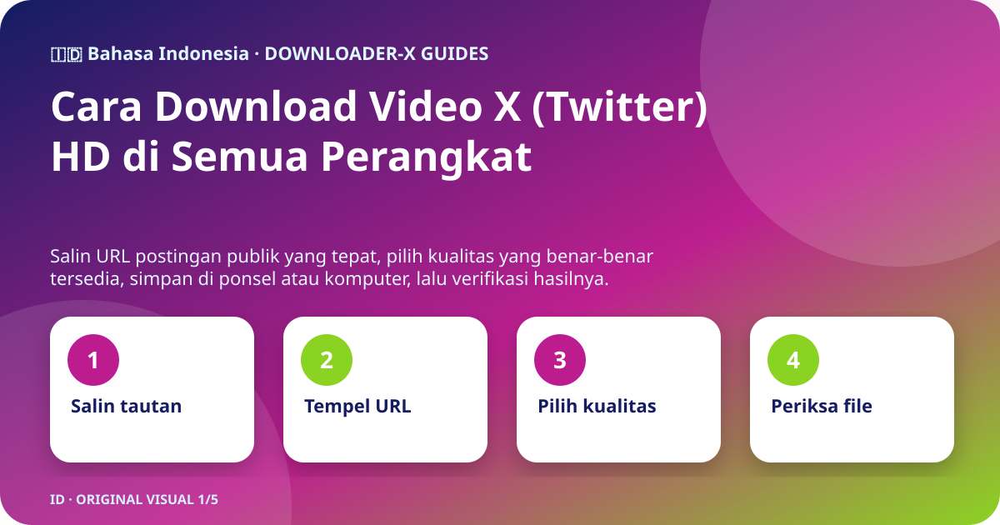
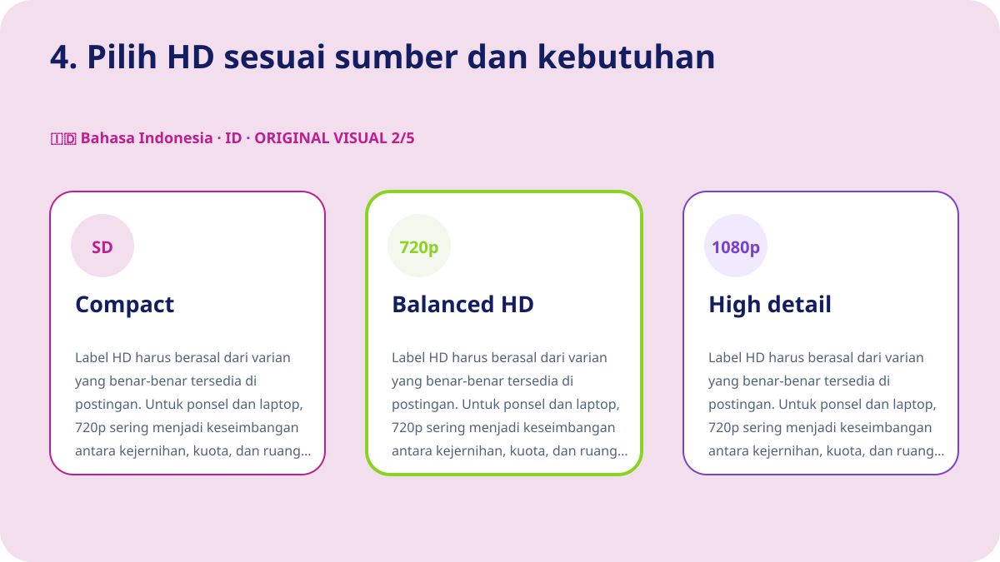
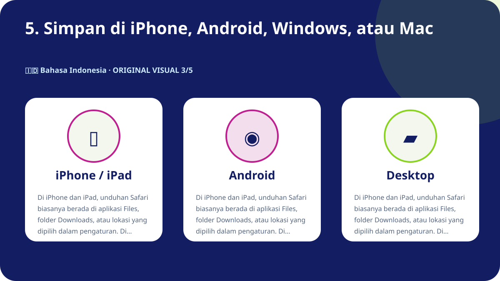
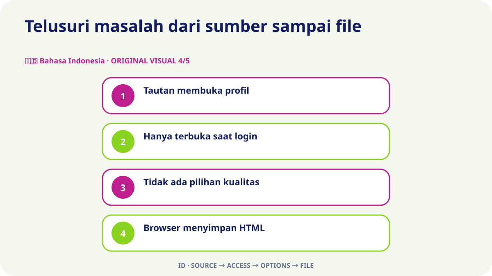

Jawaban singkat
Buka postingan X individual yang memuat video, pastikan postingan itu publik, lalu gunakan menu Bagikan untuk menyalin tautan postingan. Tempel URL tersebut ke Downloader-X, pilih varian MP4 yang benar-benar muncul, dan putar file setelah disimpan untuk memeriksa gambar serta suara. Gunakan langkah ini hanya untuk video milik sendiri, media berlisensi sesuai, atau konten yang telah diizinkan pemiliknya. Pemrosesan tautan publik tidak seharusnya meminta kata sandi X, kode verifikasi, cookie browser, atau akses jarak jauh.

1. Periksa akses publik dan hak penggunaan
Mulailah dari postingan sumber, bukan profil, hasil pencarian, tangkapan layar, atau pratinjau yang diteruskan. Buka URL di tab baru lalu cocokkan akun, teks, thumbnail, dan durasi video. Postingan publik berarti orang dapat melihatnya sesuai pengaturan saat ini, bukan berarti video bebas diposting ulang, diedit, dijual, atau dipakai untuk iklan. Jika akun terlindungi, postingan dihapus, memerlukan akses khusus, atau dibatasi, berhenti dan minta salinan resmi kepada pemilik, bukan mencoba melewati pembatasan.
Hak cipta, persetujuan, dan kredit
Tampilan publik adalah pengaturan akses, bukan lisensi. Simpan video milik sendiri, media dengan lisensi yang sesuai, atau konten dengan izin jelas. Untuk mengunggah ulang, mengedit, atau memakai secara komersial, pastikan izin mencakup penggunaan tersebut dan simpan buktinya. Hormati orang yang tampil, informasi pribadi, lokasi sensitif, dan anak di bawah umur, serta jangan mengaku karya orang lain sebagai milik sendiri.
2. Salin URL postingan yang tepat
Tautan harus menunjuk ke satu postingan yang memuat video. Gunakan menu Bagikan di X dan pilih Salin tautan ke Postingan, kemudian buka sekali di tab baru untuk memastikan tujuan. Pemeriksaan sederhana ini membedakan kesalahan URL dari gangguan layanan serta mencegah percobaan berulang yang menghasilkan file parsial atau duplikat.
- Buka postingan video asal dan masuk ke halaman postingan tunggal.
- Pilih Bagikan lalu salin tautan, jangan mengetik URL secara manual.
- Pastikan domain x.com atau twitter.com dan URL mengarah ke postingan.
- Buka di tab baru dan cocokkan akun, teks, thumbnail, serta video.
- Simpan URL sumber dan bukti izin bersama file hasil.
3. Tempel tautan dan pilih hasil yang nyata
Tempel URL yang sudah diperiksa ke X Downloader dan mulai proses satu kali. Tunggu pilihan yang sebenarnya, lalu cocokkan judul atau pratinjau dengan postingan asal. Pilih hanya format dan resolusi yang ditampilkan oleh hasil. Jangan menganggap 4K, 1080p, atau tanpa watermark tersedia bila sumber tidak menyediakannya. Saat proses gagal, layanan yang benar harus memberi pesan jelas, bukan mengirim halaman HTML, pemasang aplikasi, atau file lain lalu menandainya sebagai video berhasil.
Video demonstrasi asli Bahasa Indonesia
Video ini dibuat khusus untuk halaman ini dengan visual, warna, dan teks yang berbeda dari semua bahasa lain.
4. Pilih HD sesuai sumber dan kebutuhan
Label HD harus berasal dari varian yang benar-benar tersedia di postingan. Untuk ponsel dan laptop, 720p sering menjadi keseimbangan antara kejernihan, kuota, dan ruang penyimpanan. 1080p berguna di layar besar bila sumber memang menawarkannya. Dua file dengan resolusi sama dapat memiliki bitrate, codec, dan tingkat kompresi berbeda, jadi putar file dan jangan menilai dari namanya saja. Bila suara diperlukan, pilih opsi yang menggabungkan video dan audio atau langsung periksa trek suara setelah file tersimpan.

5. Simpan di iPhone, Android, Windows, atau Mac
Di iPhone dan iPad, unduhan Safari biasanya berada di aplikasi Files, folder Downloads, atau lokasi yang dipilih dalam pengaturan. Di Android, periksa daftar unduhan browser atau aplikasi Files. Di Windows, macOS, Linux, dan ChromeOS, lihat folder Downloads serta riwayat browser sebelum menekan lagi. Jika ruang tidak cukup, hapus salinan yang tidak dibutuhkan atau pilih resolusi lebih kecil. Jangan memasang pengelola unduhan tidak dikenal hanya karena sebuah halaman mengklaim itu wajib.

6. Verifikasi file yang disimpan
Proses selesai ketika file benar-benar dapat diputar, bukan hanya ketika bilah unduhan menghilang. Periksa hal berikut sebelum mengarsipkan atau membagikannya:
- Jenis file sesuai pilihan, misalnya MP4, bukan HTML atau installer.
- Ukuran tidak nol dan masuk akal untuk durasi serta kualitas.
- Bagian awal, tengah, dan akhir menampilkan gambar, durasi, dan suara dengan benar.
- Nama file, folder, URL sumber, serta izin penggunaan sudah dicatat.
Catat sumber sebelum menyimpan jangka panjang
Untuk proyek dengan banyak klip, catat nama akun, tanggal posting, URL permanen, deskripsi singkat, varian yang dipilih, ukuran file, dan dasar izin. Catatan ini mencegah file tanpa asal dan memudahkan pemeriksaan kredit atau lisensi. Pada quote post, balasan, atau thread, pastikan URL berasal dari postingan yang benar-benar memiliki video, bukan postingan lain yang hanya mengutip atau membahasnya.
Telusuri masalah dari sumber sampai file

Tautan membuka profil
Kembali ke postingan video dan salin URL melalui Bagikan; profil tidak menunjuk satu media.
Hanya terbuka saat login
Konten mungkin terlindungi atau terbatas. Jangan membagikan kredensial atau cookie; minta salinan resmi.
Tidak ada pilihan kualitas
Pastikan postingan masih ada, memuat video asli, dan URL dapat dibuka; segarkan sekali.
Browser menyimpan HTML
Hapus file itu, jangan ganti ekstensi, lalu ulangi pemeriksaan URL dan hasil video.
Video tidak bersuara
Periksa postingan asal dan pemutar lain; pilih varian gabungan bila sebelumnya memilih video tanpa audio.
Keamanan dan privasi
Alur tautan publik tidak membutuhkan kata sandi X, kode dua faktor, cookie yang diekspor, kendali jarak jauh, aplikasi eksekusi, atau penonaktifan keamanan perangkat. Berhenti bila halaman memberikan .exe, .dmg, atau ekstensi browser yang tidak berkaitan. Periksa domain, tipe file, dan asal sebelum membukanya. Di perangkat bersama, pindahkan file yang diizinkan dari folder publik dan hapus salinan sementara yang tidak diperlukan.
Atur file dan cegah duplikasi
Gunakan nama file yang memuat topik singkat, akun, tanggal, dan kualitas, misalnya topik_kreator_2026-08-30_720p.mp4. Pisahkan folder sementara dan folder yang sudah diverifikasi, lalu simpan hanya kualitas yang diperlukan. Menekan berulang kali tidak meningkatkan kualitas; biasanya hanya membuat duplikat atau unduhan parsial. Simpan URL, kredit, dan syarat penggunaan dalam catatan atau spreadsheet proyek yang sama.
Checklist akhir 60 detik
- URL membuka postingan video yang benar.
- Postingan publik tanpa melewati kontrol akses.
- Anda pemilik atau memiliki izin menyimpan.
- Layanan tidak meminta kredensial atau cookie.
- Kualitas yang dipilih muncul pada hasil nyata.
- Perangkat memiliki ruang yang cukup.
- Jenis dan ukuran file masuk akal.
- Gambar dan suara dapat diputar penuh.
- URL sumber dan kredit sudah disimpan.
- Penggunaan selanjutnya sesuai izin.
Pertanyaan umum
Apakah tautan x.com dan twitter.com dapat dipakai?
Ya, selama keduanya membuka postingan publik yang sama dan tujuannya sudah diperiksa.
Mengapa 1080p tidak selalu tersedia?
Resolusi bergantung pada sumber dan varian yang benar-benar dapat diambil.
Bisakah mengunduh akun terlindungi?
Tidak. Panduan ini hanya untuk postingan publik dan tidak membantu melewati batas akses.
Di mana file tersimpan pada iPhone?
Biasanya di aplikasi Files, folder Downloads, atau lokasi yang diatur di Safari.
Apa yang dilakukan jika mendapat HTML?
Hapus file, jangan mengubah ekstensi, lalu periksa ulang URL dan opsi video.
Apakah postingan publik boleh diunggah ulang?
Tidak otomatis. Anda memerlukan izin atau lisensi yang mencakup distribusi ulang.
Bahasa lain dan panduan terkait
Mulai dari URL postingan publik yang terverifikasi
Tempel tautan yang tepat, pilih hanya kualitas yang tersedia, lalu periksa file sebelum digunakan.
Gunakan Downloader-X untuk X